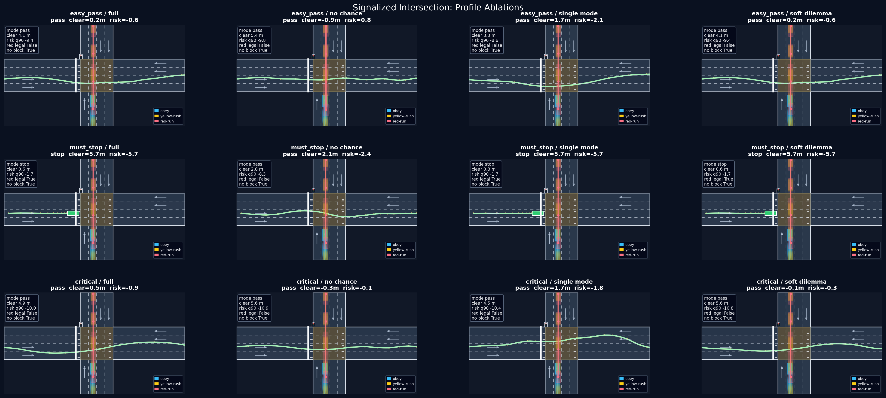
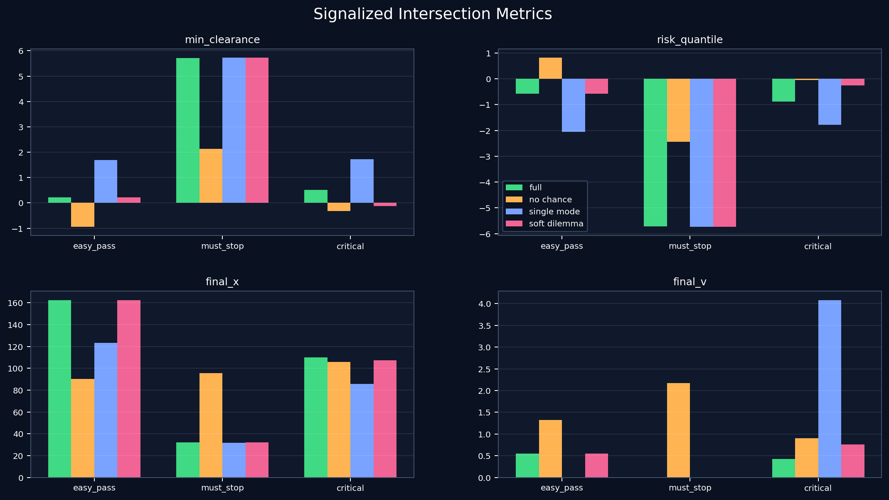
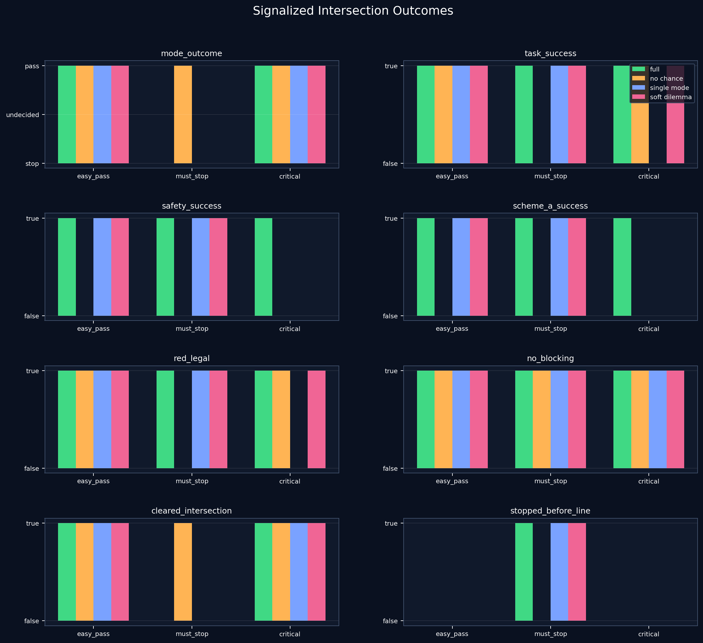

Signalized Intersection Benchmark Report
Generated: 2026-06-28 23:57:46
Purpose
This benchmark targets a signalized intersection dilemma where ego must choose stop/pass under prioritized STL-style rules and probabilistic cross traffic. The full profile preserves the black-box, non-smooth, multi-modal, probabilistic structure: temporal min/max rules, exact priority layers, and per-sample cross-traffic violations aggregated by a chance constraint.
Profiles
signalized_intersection: full prioritized chance/STL profile.signalized_intersection_no_chance: removes probabilistic chance risk.signalized_intersection_single_mode: replaces multi-modal traffic with one deterministic sample.signalized_intersection_soft_dilemma: weakens the stop/pass dilemma from tunable to soft.
The optimization profile uses 40 deterministic stratified behavior samples
in the chance layer and the evaluation metrics use 80 samples over the same
obey/yellow-rush/red-run behavior family. The chance layer keeps each
cross-traffic rollout as a per-sample g(x, xi, ctx) <= 0
violation and then uses the 0.9 quantile for alpha=0.1.
Scenarios
signalized_intersection_easy_pass: long yellow and faster approach.signalized_intersection_must_stop: short yellow and slower approach.signalized_intersection_critical: nominal dilemma timing.
Summary
| scenario | cost | intent | mode | final x | final v | min clearance | risk q90 | task success | safety success | scheme A success | paper claim | failure reason | red legal | no blocking | cleared | stopped |
|---|---|---|---|---|---|---|---|---|---|---|---|---|---|---|---|---|
| easy_pass | full | easy_pass | pass | 162.5 | 0.5 | 0.2 | -0.6 | True | True | True | safe_pass | none | True | True | True | False |
| easy_pass | no_chance | easy_pass | pass | 90.3 | 1.3 | -0.9 | 0.8 | True | False | False | unsafe_or_blocked | cross_traffic_conflict | True | True | True | False |
| easy_pass | single_mode | easy_pass | pass | 123.1 | 0.0 | 1.7 | -2.1 | True | True | True | safe_pass | none | True | True | True | False |
| easy_pass | soft_dilemma | easy_pass | pass | 162.5 | 0.5 | 0.2 | -0.6 | True | True | True | safe_pass | none | True | True | True | False |
| must_stop | full | must_stop | stop | 31.9 | 0.0 | 5.7 | -5.7 | True | True | True | safe_stop | none | True | True | False | True |
| must_stop | no_chance | must_stop | pass | 95.6 | 2.2 | 2.1 | -2.4 | False | False | False | unsafe_or_blocked | red_illegal | False | True | True | False |
| must_stop | single_mode | must_stop | stop | 31.8 | 0.0 | 5.7 | -5.7 | True | True | True | safe_stop | none | True | True | False | True |
| must_stop | soft_dilemma | must_stop | stop | 31.9 | 0.0 | 5.7 | -5.7 | True | True | True | safe_stop | none | True | True | False | True |
| critical | full | dilemma | pass | 109.9 | 0.4 | 0.5 | -0.9 | True | True | True | safe_pass | none | True | True | True | False |
| critical | no_chance | dilemma | pass | 105.9 | 0.9 | -0.3 | -0.1 | True | False | False | unsafe_or_blocked | cross_traffic_conflict | True | True | True | False |
| critical | single_mode | dilemma | pass | 85.5 | 4.1 | 1.7 | -1.8 | False | False | False | unsafe_or_blocked | red_illegal | False | True | True | False |
| critical | soft_dilemma | dilemma | pass | 107.3 | 0.8 | -0.1 | -0.3 | True | False | False | unsafe_or_blocked | cross_traffic_conflict | True | True | True | False |
Profile aggregates
| cost | runs | task rate | safety rate | scheme A rate | min clearance | worst risk q90 | failure reason |
|---|---|---|---|---|---|---|---|
| full | 3 | 1.00 | 1.00 | 1.00 | 0.21 | -0.59 | none |
| no_chance | 3 | 0.67 | 0.00 | 0.00 | -0.94 | 0.82 | cross_traffic_conflict, red_illegal |
| single_mode | 3 | 0.67 | 0.67 | 0.67 | 1.68 | -1.79 | red_illegal |
| soft_dilemma | 3 | 1.00 | 0.67 | 0.67 | -0.12 | -0.25 | cross_traffic_conflict |
Interpretation / Paper-level takeaway
Full profile satisfies the intended stop/pass task behavior across the supplied scenarios, and satisfies the strict safety-success criterion (easy_pass: safe_pass, must_stop: safe_stop, critical: safe_pass).
This is a Scheme A single-ego stochastic benchmark. Ego is the only optimizing agent; cross traffic is an exogenous probabilistic behavior model with obey/yellow-rush/red-run style samples. The result supports the paper-level success claim for Scheme A: MG-IGO can rank black-box prioritized chance/STL costs with non-smooth temporal rules and multi-modal uncertainty while resolving the stop/pass dilemma safely. It does not claim active multi-agent RNE behavior in this experiment.
Figures
Trajectory Overview

Metrics Overview

Outcome Overview

Reproduction
cd /mnt/d/claude_workspace1/igo
JAX_PLATFORMS=cuda /root/.venvs/tcmgigo-jaxgpu/bin/python compare_signalized_intersection_profiles.py --force
python generate_signalized_intersection_report.py